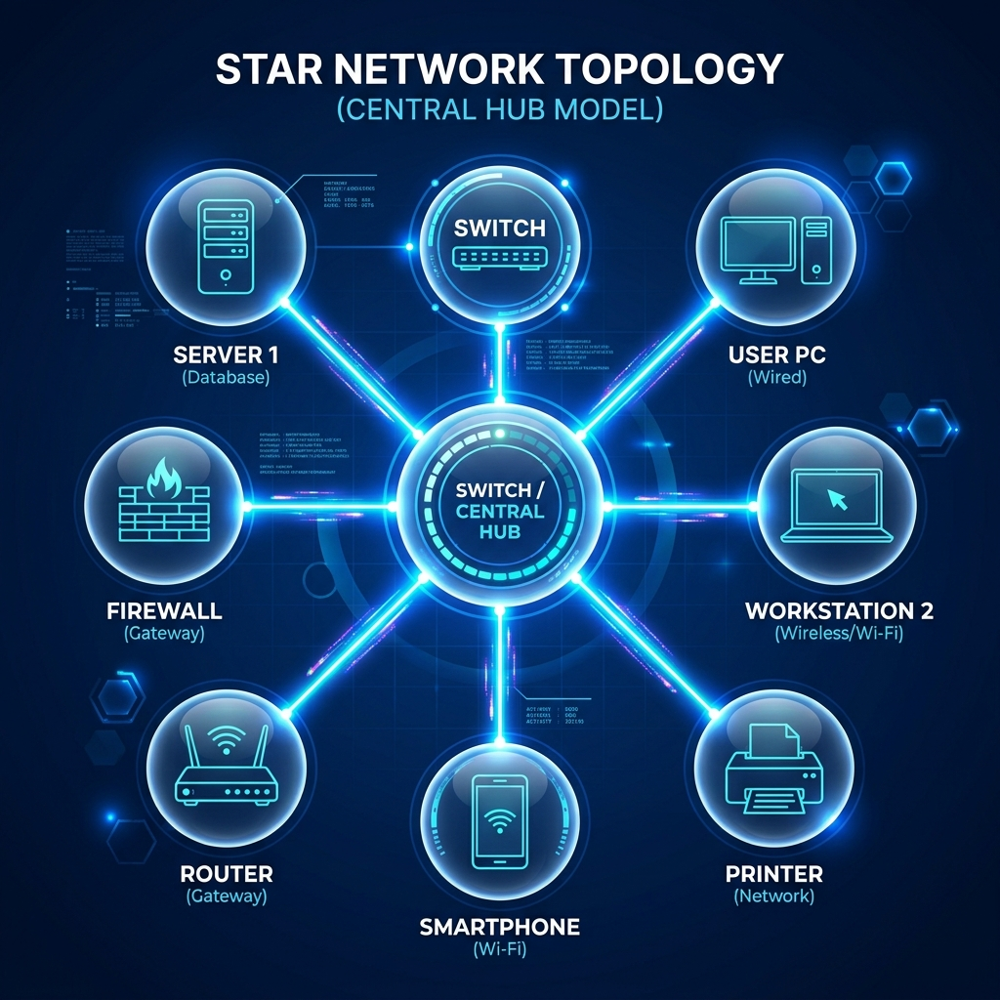

Materi Utama Pembelajaran
Informatika
Dasar
Kurikulum Sekolah Cinta Kasih Tzu Chi • Terakhir Diperbarui: Juli 2026

1 Materi 1: Topografi (Topologi) Jaringan Detail
Topografi atau topologi jaringan mendefinisikan struktur fisik atau logis dari sebuah jaringan komputer. Ini mencakup bagaimana perangkat komputer, server, dan node saling terhubung. Jenis topologi seperti Star, Bus, Ring, Mesh, dan Tree menentukan efisiensi transfer data, biaya instalasi, dan tingkat toleransi kesalahan jaringan. Memahami karakteristik masing-masing topologi sangat penting untuk merancang infrastruktur jaringan yang stabil, minim latensi, dan mudah dalam pemecahan masalah (troubleshooting) saat terjadi gangguan transmisi data.
2 Materi 2: Sistem Biner Detail
Sistem bilangan biner merupakan bahasa dasar komputer yang menggunakan basis dua angka, yaitu 0 (nol) dan 1 (satu). Setiap angka biner mewakili satu bit informasi. Komputer memanfaatkan sistem biner untuk memproses semua instruksi melalui sirkuit elektronik transistor yang bernilai aktif (1) atau nonaktif (0). Representasi biner ini mempermudah sistem komputer dalam mengolah data teks, gambar, video, hingga algoritma kecerdasan buatan melalui operasi logika boolean dasar.
3 Materi 3: Kriptografi Detail
Kriptografi adalah metode penyandian data (enkripsi) agar data tersebut aman dari pihak yang tidak berwenang saat ditransmisikan, dan hanya bisa dibaca (dekripsi) oleh penerima yang sah menggunakan kunci rahasia. Kriptografi sangat penting dalam menjaga kerahasiaan data di internet seperti kata sandi, transaksi bank, dan privasi obrolan. Di era modern, algoritma enkripsi seperti AES, RSA, dan protokol SSL/TLS menjadi fondasi utama keamanan siber dalam melindungi miliaran lalu lintas informasi global setiap detiknya.
4 Materi 4: Vibe Coding Detail
Vibe coding adalah tren pemrograman baru di mana manusia tidak lagi menulis baris kode secara manual, melainkan bertindak sebagai arsitek yang mengarahkan asisten kecerdasan buatan (AI) melalui rekayasa perintah (prompt engineering) untuk menyusun kode. Fokus utama beralih pada pemahaman logika sistem dan pemecahan masalah.
8 Pilar Informatika
Materi dasar Kurikulum Merdeka yang dipelajari siswa:
Kumpulan Tugas Praktik
Dokumentasi hasil belajar pemrograman web, pembuatan antarmuka, logika JavaScript, dan pengolahan data.
Website Portofolio Sekolah & Personal UI Design
Proyek pembuatan website responsif berbasis HTML5, Tailwind CSS, dan JavaScript interaktif dengan estetika biru-putih yang bersih.
Kalkulator Nilai Akhir Siswa & Predikat Akademik
Aplikasi logika JavaScript sederhana untuk menghitung bobot nilai harian, UTS, dan UAS siswa secara otomatis beserta konversi huruf mutu.
Wireframe & Prototype Aplikasi Edukasi Tzu Chi
Perancangan prototype antarmuka aplikasi mobile pendukung budaya humanis dan kegiatan sosial siswa Sekolah Cinta Kasih Tzu Chi.
Analisis Data & Visualisasi Grafik Prestasi
Pengolahan data kuantitatif menggunakan Python untuk menghasilkan grafik tren pencapaian prestasi akademik siswa.